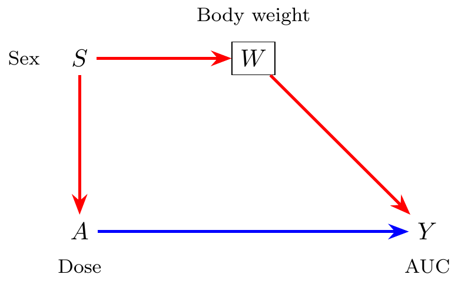
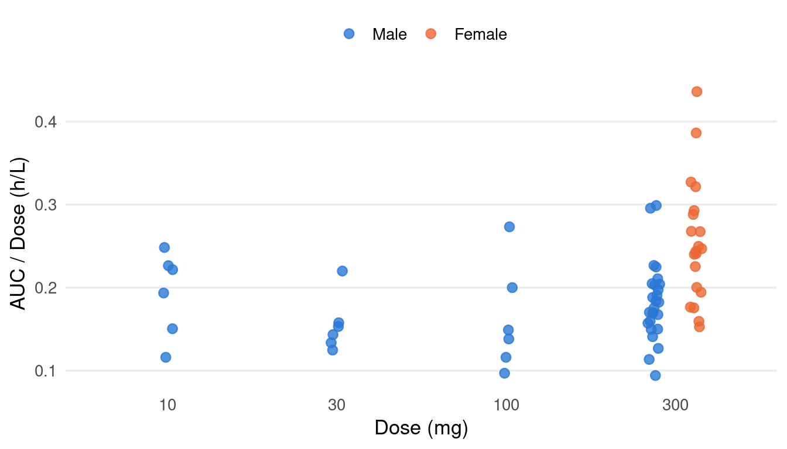
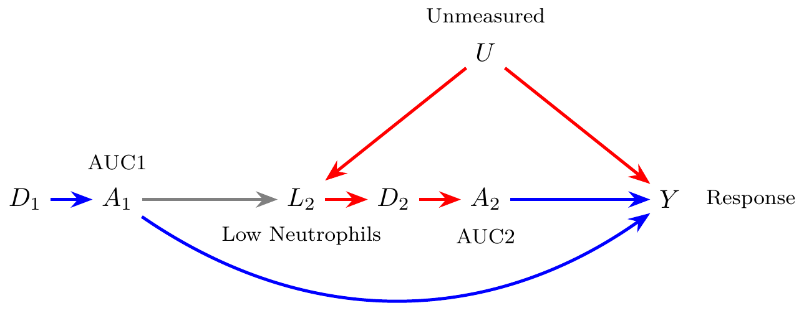
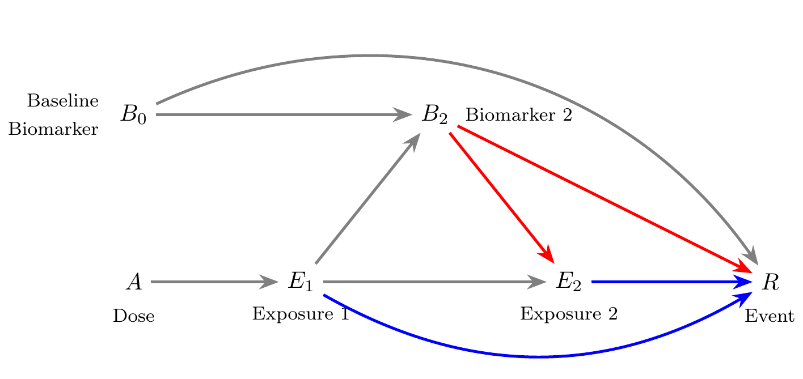
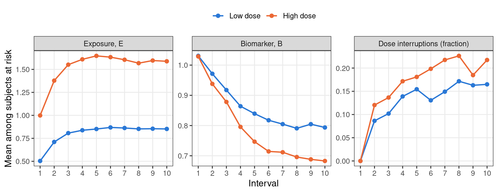
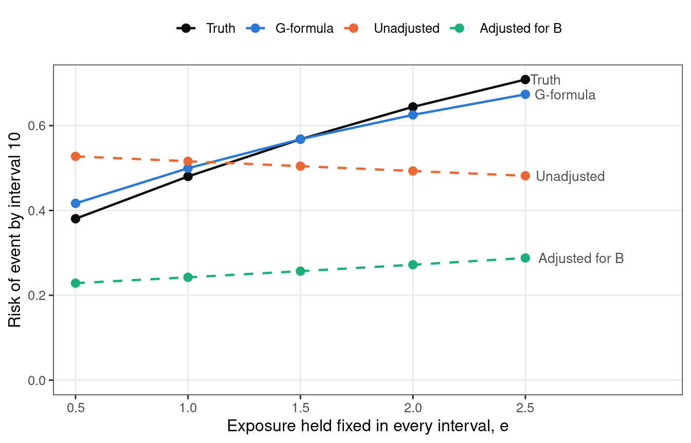

4 G-formula and G-computation
4.0.1 What this chapter is about
In this chapter we cover g-formula1, which is a prediction-based approach to deriving valid causal inferences. G-formula is not the only way to derive valid causal inferences – for example, in subsequent chapters we will see alternative methods based on inverse propensity weighting – but g-formula is especially well suited to pharmacometric analyses that already involve modeling and simulation.
4.0.2 Why g-formula is important
If your analyses already employ modeling and simulation, you can simply think of g-formula as the correct logic to employ in your simulations in order to answer a question about cause and effect. You may have conducted analyses in the past where, on the basis of intuition or experience, you implicitly used g-formula, even if you did not know it by that name. You may also have encountered situations where intuition and experience were not a sufficient guide, and it was not clear what simulation logic you should follow. The theory associated with g-formula will be especially helpful in those situations.
4.0.3 Goals for this chapter
By the end of this chapter, you will have both the conceptual understanding and the practical skills to be able to employ g-formula to address certain exposure-response problems involving both baseline and time-varying confounding.
4.0.3.1 Conceptual understanding
In order to build intuition about what g-formula is doing, we will look at a simple application of something called the “plug-in g-formula”. If you are a pharmacometrician, we don’t expect this version of g-formula to be especially useful in your day-to-day work, but it’s helpful to understand because it strips the logic down to a bare minimum, without the distraction of modeling.
4.0.3.2 Practical skills
In terms of practical skills, it will be helpful to think of these problems in terms of three levels of difficulty, only two of which will be addressed in this chapter.
- Dealing with baseline confounding only. In this context, the proper “g-formula compliant” simulations can easily be coded up “by hand”, and there is no limitation of the types of models that we can use.
- Dealing with time-varying confounding using discrete-time models. When time-varying confounding is in play, the proper “g-formula compliant” simulations are somewhat complex. Rather than code up these simulations “by hand”, we will use the R package
gfoRmula, which facilitates these simulations for discrete-time models. - It is important to note that g-formula is not an approach to modeling per se, but is rather a means of deriving inferences from fitted models (or from observed means, in the case of “plug-in” g-formula). Nonetheless, the current state of g-formula research does currently put some constraints on the types of models we can employ. In particular, it is still an open question how to apply g-formula with continuous time models, such as a standard population PKPD model (Braniff 2026). Accordingly, we won’t attempt to treat these cases here.
As a reminder, we use “exposure” in the causal inference sense throughout this chapter (see Section 2.3 and Table 2.1).
4.1 G-formula for point exposures with baseline confounding
When we are interested in the effects of a point exposure on a response, we will specifically be concerned with baseline confounding (time-varying confounding can’t arise if the exposure variable is not itself time-varying). Baseline confounding has a very intuitive remedy, which is sometimes referred to as “standardization”. Standardization is a special case of g-formula.
4.1.1 Example: dose and AUC in a single ascending dose study
Consider a first-in-human single ascending dose (SAD) study with 5 cohorts. Let’s suppose that the clinical development plan is aiming to develop the drug in a target population that is 50% men and 50% women. Suppose that, to address fetal safety concerns, the first four dose levels are tested in escalation cohorts that enroll men only. The highest dose is then studied in an expansion cohort that enrolls 50% men and 50% women. There may be good ethical reasons for such a design, but it confounds the relationship between dose and exposure.
In this case, the “point exposure” is \(\text{Dose}\), and \(AUC\) is the outcome. Let’s suppose we want to know how \(AUC\) changes as a function of dose in a target population composed of 50% men and 50% women.
To keep the example transparent, the PK is linear, and body weight is the only PK covariate. It acts on clearance through allometric scaling:
\[ CL_i = CL_{pop} \left(\frac{WT_i}{70}\right)^{0.75} e^{\eta_i}, \qquad AUC_i = \frac{\text{Dose}_i}{CL_i} \]
By construction, sex affects \(AUC\) only through body size. Sex also determines which doses a subject can receive, because women only enter the study only in the expansion cohort. The DAG is shown below, with \(A\) = dose, \(Y\) = \(AUC\), \(S\) = sex, and \(W\) = body weight.
In the absence of any adjustments for weight, the backdoor path \(A \leftarrow S \rightarrow W \rightarrow Y\) (red) is open, indicating that the (unadjusted) association between \(\text{Dose}\) and \(AUC\) is biased relative to the true causal effect. A naive comparison of \(AUC\) across doses therefore compares different populations as well as different doses. Either \(S\) or \(W\) blocks the path. We adjust for \(W\) (drawn as a rectangle) for a reason we explain below.
4.1.1.1 Simulating the study
The simulation below uses doses of 10, 30, 100 and 300 mg, with six men in each escalation cohort and 40 subjects (20 men, 20 women) in the expansion cohort at 300 mg. Body weight is log-normal, with a median of 85 kg in men and 65 kg in women.
sad_param <- list(
doses = c(10, 30, 100, 300), # mg
n_esc = 6, # men per escalation cohort
n_exp = 40, # expansion cohort, 50% women
exp_dose = 300, # expansion cohort dose (mg)
wt_med = c(Male = 85, Female = 65), # kg
wt_lsd = 0.15,
cl_pop = 5, # L/h for a 70 kg subject
cl_exp = 0.75, # allometric exponent
omega = 0.25 # SD of eta on CL
)
# Draw body weight, clearance and AUC for a set of subjects with given sex and dose
sad_pk <- function(dat, p = sad_param) {
dat |>
mutate(
WT = exp(rnorm(n(), log(p$wt_med[SEX]), p$wt_lsd)),
CL = p$cl_pop * (WT / 70)^p$cl_exp * exp(rnorm(n(), 0, p$omega)),
AUC = DOSE / CL
)
}
sad_simulate_trial <- function(p = sad_param) {
escalation <- tibble(
COHORT = "Escalation",
DOSE = rep(p$doses, each = p$n_esc),
SEX = "Male"
)
expansion <- tibble(
COHORT = "Expansion",
DOSE = p$exp_dose,
SEX = rep(c("Male", "Female"), each = p$n_exp / 2)
)
bind_rows(escalation, expansion) |>
mutate(ID = row_number(), .before = 1) |>
sad_pk(p)
}
set.seed(20261109)
sad_dat <- sad_simulate_trial()The figure shows dose-normalized \(AUC\) for each subject. If the PK is linear, \(AUC/\text{Dose}\) does not depend on dose, so any trend in this plot is not caused by dose. Women (who are only present at 300 mg) sit higher.
sad_dat |>
mutate(SEX = factor(SEX, levels = c("Male", "Female"))) |>
ggplot(aes(factor(DOSE), AUC / DOSE, colour = SEX)) +
geom_point(position = position_jitterdodge(jitter.width = 0.15, dodge.width = 0.5,
seed = 1),
size = 2.5, alpha = 0.8) +
scale_colour_manual(values = c(Male = "#2a78d6", Female = "#eb6834"), name = NULL) +
labs(x = "Dose (mg)", y = "AUC / Dose (h/L)") +
theme_minimal(base_size = 13) +
theme(panel.grid.major.x = element_blank(),
panel.grid.minor = element_blank(),
legend.position = "top")
4.1.1.2 Estimand and ground truth
Let \(Y(a)\) be the potential \(AUC\) for a subject if they received dose \(a\). Our target is the mean potential \(AUC\) at each dose in a 50/50 population of men and women. This is the population the drug will be used in.
\[ E[Y(a)], \quad a \in \{10, 30, 100, 300\} \]
Since we wrote the data-generating process, we can compute the truth by simulation: give every member of a large 50/50 population each dose in turn and average the resulting \(AUC\)s. This is the “correct simulation logic” that we referred to at the outset of the chapter. In the simulation, dose is set by intervention on every person, not by the cohort someone happened to be enrolled in.
set.seed(1)
sad_truth <- tibble(SEX = rep(c("Male", "Female"), each = 5e5)) |>
cross_join(tibble(DOSE = sad_param$doses)) |>
sad_pk() |>
group_by(DOSE) |>
summarise(Truth = mean(AUC))Note that sad_pk() draws a new weight and \(\eta\) for each subject–dose row. That is harmless here because the truth is a population mean, not an individual-level contrast.
4.1.1.3 Naive analysis
The naive estimate of \(E[Y(a)]\) is the observed mean \(AUC\) among subjects who got dose \(a\):
\[ \hat{E}[Y \mid A = a] \]
This is the right answer only if the subjects at each dose are exchangeable with the target population. Here they are not: the escalation doses include men only.
sad_naive <- sad_dat |>
group_by(DOSE) |>
summarise(Naive = mean(AUC))4.1.1.4 Standardization (the g-formula for a point exposure)
Because \(W\) blocks the backdoor path, conditional exchangeability holds given \(W\), and the g-formula for a point exposure is
\[ E[Y(a)] = \int E[Y \mid A = a, W = w] \, dF_W(w), \]
where \(F_W\) is the distribution of body weight in the target population. There are two ingredients:
- An outcome model for \(E[Y \mid A, W]\). We use a log-linear regression, which matches the structure of the PK model: \(\log AUC = \beta_0 + \beta_1 \log \text{Dose} + \beta_2 \log WT + \varepsilon\).
- A sample from \(F_W\). The expansion cohort is a 50/50 sample of the target population, so its observed weights can stand in for \(F_W\).
The task of integration can then be accomplished by averaging over the simulated values. For each dose \(a\), set every target subject’s dose to \(a\), predict their mean \(AUC\) from the model, and average:
sad_fit <- lm(log(AUC) ~ log(DOSE) + log(WT), data = sad_dat)
sad_target <- sad_dat |>
filter(COHORT == "Expansion") |>
select(ID, SEX, WT)
sad_std <- sad_target |>
cross_join(tibble(DOSE = sad_param$doses)) |>
mutate(
# back-transform: the mean of a log-normal is exp(mu + sigma^2 / 2)
PRED = exp(predict(sad_fit, newdata = pick(everything())) + sigma(sad_fit)^2 / 2)
) |>
group_by(DOSE) |>
summarise(Standardized = mean(PRED))Note the subjects are fixed and only the dose changes across rows. Each target subject therefore appears once at every dose level. This is the counterfactual intervention “give everyone dose \(a\)” applied to the model. To develop an intution for what the cross-join is accomplishing in the code above, take a look at Kat Hoffman’s excellent Visual Guide to G-computation
4.1.1.5 Comparing the estimates
sad_naive |>
left_join(sad_std, by = "DOSE") |>
left_join(sad_truth, by = "DOSE") |>
mutate(across(c(Naive, Standardized), list(bias = ~ 100 * (.x / Truth - 1)),
.names = "{.col} bias (%)")) |>
knitr::kable(digits = 1, col.names = c("Dose (mg)", "Naive", "Standardized",
"Truth", "Naive bias (%)",
"Standardized bias (%)"))| Dose (mg) | Naive | Standardized | Truth | Naive bias (%) | Standardized bias (%) |
|---|---|---|---|---|---|
| 10 | 1.9 | 2.0 | 2.0 | -3.4 | -2.1 |
| 30 | 4.7 | 6.0 | 6.0 | -22.1 | 0.9 |
| 100 | 16.2 | 20.8 | 19.9 | -18.7 | 4.2 |
| 300 | 64.2 | 64.2 | 59.8 | 7.3 | 7.3 |
That’s it! We have applied g-formula! Hopefully you find yourself saying, “Of course that works! That’s what I would have done in any case, even if I had never heard of standardization or g-formula!” If so, great, but don’t get too high on your horse yet: it will get more complicated when we get to time-varying confounding.
4.2 G-formula for time-varying exposure with longitudinal confounding
4.2.1 Example illustrating plug-in G-formula
In the preceding example, the key confounding variable, weight, was continuously valued. Similarly, in many the applications in this book, both the confounding variable(s) and the exposure variable(s) will be continuous, and we will model their effects (as we did in the preceding example), using parametric regression. When we implement g-formula using parametric regression models, we are using parametric g-formula, and that variant of g-formula will be our primary focus in this book.
For didactic purposes however, it will be helpful to strip away the distraction of regression models as we begin our exploration of time-varying confounding. To do this, the following example implements the plug-in g-formula, which is a version of g-formula that can be computed using only the observed conditional means. The plug-in g-formula can only be used when all confounding variables and intervention variables are categorically valued. The following example is constructed to conform (somewhat artificially) to this requirement. The data are adapted from Table 21.1 in Hernán and Robins (2024).
In Hernán and Robins (2024) , the data are presented in the form of a summary table. The essential structure of that table is preserved below, albeit using variable names that correspond more closely to a standard pharmacometric problem in oncology2. The original example is described as arising from a sequentially. Note that we have preserved the exorbitant sample sizes of the original example because we want to focus on issues of bias in estimation (without the distraction of precision issues, which become relevant at lower sample sizes.)
summ_dat <- tibble(
DOSE = rep(1, 8),
AUC1 = rep(c("high", "low"), each = 4),
LOWNEUT = rep(rep(0:1, each = 2), 2),
AUC2 = rep(c("high", "low"), 4),
N = 100 * c(24, 16, 24, 96, 48, 32, 16, 64),
ORR = 0.01 * rep(c(84, 52, 76, 44), each = 2)
)In order to more easily analyze this data, we expand the summary table to one subject per row:
set.seed(2026)
subj_dat <- summ_dat |>
mutate(N_RESP = round(N * ORR)) |>
slice(rep(row_number(), N)) |>
group_by(AUC1, LOWNEUT, AUC2) |>
mutate(RESP = as.integer(row_number() <= N_RESP)) |>
ungroup() |>
slice_sample(prop = 1) |>
mutate(ID = row_number()) |>
select(ID, DOSE, AUC1, LOWNEUT, AUC2, RESP)The subject-level data subj_dat describe a two-period study. Map the variables to the usual notation as follows:
| Symbol | Variable | Meaning |
|---|---|---|
| \(D_1\) | DOSE1 |
Dose for period 1 (high for everyone) |
| \(A_1\) | AUC1 |
Area under \(C(t)\) curve in period 1 (high or low) |
| \(L_2\) | LOWNEUT |
Low neutrophil count after period 1 (0/1) |
| \(D_2\) | DOSE2 |
Dose period 2 (high or low) |
| \(A_2\) | AUC2 |
Area under \(C(t)\) curve in period 2 (high or low) |
| \(Y\) | RESP |
Objective response (0/1) |
Though it’s not obvious (yet) these data have been constructed so that exposure has no effect on response. However, we will willfully forget this fact when it comes time to draw the DAG, because in practice we would never know the true data generating mechanism. The DAG below, adapted from Figure 20.3 of Hernán and Robins (2024), shows the assumed causal structure. \(U\) is an unmeasured common cause of \(L_2\) and \(Y\) (for example, underlying disease severity).
For purposes of this example, we will focus on how to estimate the causal effect of \(AUC\) on reponse (the “exposure-response” in the usual pharmacometric sense). Depending on the context, it might be sufficient to ignore \(AUC\) entirely and directly estimate the “dose-response” relationship instead. However, as summarized by Braniff (2026),
While dose is a natural intervention variable, dose–response inference is specific to the formulation, regimen, and delivery mechanism studied and does not generalize readily across many design dimensions relevant to development. A key contribution of ER analysis is the decomposition of the dose-exposure-response relation into two separable questions: is the dose achieving adequate exposure, and is that exposure sufficient to drive response? This decomposition enables modular optimization so that formulation, regimen, and delivery can be modified while maintaining clear exposure targets, guiding development across changing phases and populations.
When we adopt this perspective (as pharmacometricians most often do), we are implicitly treating \(AUC\) as the treatment or intervention variable. Even though we cannot directly intervene on \(AUC\), an exposure-response analysis is implicitly asking: “If we could intervene directly to change \(AUC\), what would happen to the response?”. Moreover specifically, we will adopt the perspective that we want to know the causal effect of an entire exposure trajectory, so the hypothetical intervention involves setting the value of both \(AUC1\) and \(AUC2\).

In this simplified representation, \(L_2\) does not appear to be a time-varying covariate. Of course, we could easily add baseline neutrophiles as \(L_1\), but that would just a cosmetic change. The essential feature of the DAG that introduces time-varying confounding is the fact that \(L_2\), being downstream of \(A_1\) and upstream of \(A_2\), plays two roles:
- It is a confounder of \(A_2\). Low neutrophils prompt a change in the period-2 dose (\(L_2 \rightarrow D_2\)), which in turn changes period-2 exposure (\(D_2 \rightarrow A_2\)). The backdoor path \(A_2 \leftarrow D_2 \leftarrow L_2 \leftarrow U \rightarrow Y\) (red) is open unless we condition on \(L_2\).
- It is a collider on the path \(A_1 \rightarrow L_2 \leftarrow U \rightarrow Y\). This path is closed as long as we do not condition on \(L_2\) or on its descendant \(D_2\).
Because \(A_1\) affects \(L_2\), which in turn affects \(A_2\), this structure is called treatment–confounder feedback. Adjusting for \(L_2\) is needed to handle the first path but opens the second, so no single conditional analysis (adjusting or not adjusting for \(L_2\)) gives an unbiased estimate of the joint effect of \(A_1\) and \(A_2\).
There are several different exposure histories that we could theoretically compare:
- “always high” \((a_1, a_2) = (\text{high}, \text{high})\),
- “high-then-low” \((a_1, a_2) = (\text{high}, \text{low})\)
- “always low” \((a_1, a_2) = (\text{low}, \text{low})\)
- “low-then-high” \((a_1, a_2) = (\text{low}, \text{high})\).
Note that to compare any of the strategies listed above is to target a hypothetical estimand, as opposed to a treatment policy estimand. In a treatment policy perspective, the dose reduction would be considered as an intercurrent event, and would necessarily be incorporated into the treatment definition. By contrast, if we want to isolate the causal effect of exposure per se, we have to contrast hypothetical scenarios in which the intercurrent event has no effect. To simplify our discussion, we will compare the “always high” and “always low” strategies, but the following discussion would apply equally to a comparison of any of the hypothetical strategies.
We have yet to say exactly what g-formula is in general … please be patient, we will get there … but in this special two-timepoint case, the g-formula can be expressed as:
\[ E[Y(a_1, a_2)] = \sum_{l} E[Y \mid A_1 = a_1, L_2 = l, A_2 = a_2] \, \Pr(L_2 = l \mid A_1 = a_1) \]
In words: within each level of \(L_2\), take the mean response among subjects who actually followed the strategy, and then average over \(L_2\) using the distribution that \(L_2\) would have under \(a_1\). Note that the weights are \(\Pr(L_2 = l \mid A_1 = a_1)\), not the marginal \(\Pr(L_2 = l)\). This is what lets the g-formula handle a confounder that is itself affected by earlier exposure.
Plug-in g-computation means estimating each piece of the formula from the data and plugging the estimates in. Here every variable is discrete, so each piece is simply a sample proportion or mean.
4.2.1.1 Step 1: Distribution of \(L_2\) given \(A_1\)
Estimate \(\Pr(L_2 = l \mid A_1 = a_1)\) by the proportion of subjects in each level of LOWNEUT within each level of AUC1:
p_L <- subj_dat |>
count(AUC1, LOWNEUT) |>
group_by(AUC1) |>
mutate(P_L = n / sum(n)) |>
ungroup()
p_L# A tibble: 4 × 4
AUC1 LOWNEUT n P_L
<chr> <int> <int> <dbl>
1 high 0 4000 0.25
2 high 1 12000 0.75
3 low 0 8000 0.5
4 low 1 8000 0.5 High period-1 exposure makes low neutrophils more likely (0.75 vs 0.5).
4.2.1.2 Step 2: Mean response given exposure history and \(L_2\)
Estimate \(E[Y \mid A_1 = a_1, L_2 = l, A_2 = a_2]\) by the observed response rate in each combination of AUC1, LOWNEUT and AUC2:
m_Y <- subj_dat |>
group_by(AUC1, LOWNEUT, AUC2) |>
summarise(n = n(), n_resp = sum(RESP), E_Y = mean(RESP), .groups = "drop")
m_Y# A tibble: 8 × 6
AUC1 LOWNEUT AUC2 n n_resp E_Y
<chr> <int> <chr> <int> <int> <dbl>
1 high 0 high 2400 2016 0.84
2 high 0 low 1600 1344 0.84
3 high 1 high 2400 1248 0.52
4 high 1 low 9600 4992 0.52
5 low 0 high 4800 3648 0.76
6 low 0 low 3200 2432 0.76
7 low 1 high 1600 704 0.44
8 low 1 low 6400 2816 0.444.2.1.3 Step 3: Combine for one strategy
For the “always high” strategy, keep the rows of m_Y with AUC1 == "high" and AUC2 == "high". Then attach the matching weights from Step 1 and form the weighted sum:
g_high <- m_Y |>
filter(AUC1 == "high", AUC2 == "high") |>
left_join(p_L |> select(AUC1, LOWNEUT, P_L), by = c("AUC1", "LOWNEUT")) |>
mutate(CONTRIB = E_Y * P_L)
g_high# A tibble: 2 × 8
AUC1 LOWNEUT AUC2 n n_resp E_Y P_L CONTRIB
<chr> <int> <chr> <int> <int> <dbl> <dbl> <dbl>
1 high 0 high 2400 2016 0.84 0.25 0.21
2 high 1 high 2400 1248 0.52 0.75 0.39sum(g_high$CONTRIB)[1] 0.6Written out by hand, this is
\[ E[Y(\text{high}, \text{high})] = 0.84 \times 0.25 + 0.52 \times 0.75 = 0.6 \]
Repeat for the “always low” strategy:
g_low <- m_Y |>
filter(AUC1 == "low", AUC2 == "low") |>
left_join(p_L |> select(AUC1, LOWNEUT, P_L), by = c("AUC1", "LOWNEUT")) |>
mutate(CONTRIB = E_Y * P_L)
g_low# A tibble: 2 × 8
AUC1 LOWNEUT AUC2 n n_resp E_Y P_L CONTRIB
<chr> <int> <chr> <int> <int> <dbl> <dbl> <dbl>
1 low 0 low 3200 2432 0.76 0.5 0.38
2 low 1 low 6400 2816 0.44 0.5 0.22sum(g_low$CONTRIB)[1] 0.6\[ E[Y(\text{low}, \text{low})] = 0.76 \times 0.5 + 0.44 \times 0.5 = 0.6 \]
The two strategies give the same mean response, so the causal effect of “always high” vs “always low” exposure is 0.
4.2.1.4 All four strategies at once
The same calculation for every strategy is one join followed by a grouped sum:
g_all <- m_Y |>
left_join(p_L |> select(AUC1, LOWNEUT, P_L), by = c("AUC1", "LOWNEUT")) |>
group_by(AUC1, AUC2) |>
summarise(E_Y_strategy = sum(E_Y * P_L), .groups = "drop")
g_all# A tibble: 4 × 3
AUC1 AUC2 E_Y_strategy
<chr> <chr> <dbl>
1 high high 0.6
2 high low 0.6
3 low high 0.6
4 low low 0.6Exposure has no effect on response under any strategy: every strategy gives a mean response of 0.6.
4.2.1.5 Why not simply adjust for \(L_2\)?
Compare this with two common analyses that do not use the g-formula.
Crude comparison. Compare response rates among subjects whose observed exposures happened to match each strategy:
crude <- subj_dat |>
filter(AUC1 == AUC2) |>
group_by(AUC1, AUC2) |>
summarise(n = n(), E_Y = mean(RESP), .groups = "drop")
crude# A tibble: 2 × 4
AUC1 AUC2 n E_Y
<chr> <chr> <int> <dbl>
1 high high 4800 0.68
2 low low 9600 0.547The crude difference is 0.133. It is biased because \(L_2\) confounds the period-2 exposure: subjects with low neutrophils are more likely to receive low exposure in period 2, and they also respond less often.
Stratifying on \(L_2\). Within each level of LOWNEUT, compare response between “always high” and “always low” subjects:
strat <- m_Y |>
filter(AUC1 == AUC2) |>
select(LOWNEUT, AUC1, AUC2, E_Y) |>
arrange(LOWNEUT, AUC1, AUC2)
strat# A tibble: 4 × 4
LOWNEUT AUC1 AUC2 E_Y
<int> <chr> <chr> <dbl>
1 0 high high 0.84
2 0 low low 0.76
3 1 high high 0.52
4 1 low low 0.44Within each stratum, “always high” looks better by 0.08, even though, by construction, exposure has no effect. Stratifying removes confounding of \(A_2\), but \(L_2\) is a collider on \(A_1 \rightarrow L_2 \leftarrow U \rightarrow Y\). Conditioning on it opens that path and creates a non-causal association between \(A_1\) and \(Y\). High period-1 exposure itself pushes toward low neutrophils, so among subjects with the same neutrophil status, high-exposure subjects tend to have more favorable values of \(U\), and therefore respond more often, explaining the above bias (+0.08 in “always high”).
The g-formula avoids both problems. It conditions on \(L_2\) when estimating the response means (Step 2), which handles confounding of \(A_2\). It then averages over \(L_2\) using its distribution under \(a_1\) (Step 1) rather than holding \(L_2\) fixed. As a result, the collider path stays closed for \(A_1\).
4.2.2 Example of parametric g-formula using the gfoRmula package
The calculation above is nonparametric: every conditional probability and mean was estimated as a sample proportion within a cell. The same answer can be obtained with the parametric g-formula, provided the models are saturated, i.e. they have one parameter for each combination of the covariates they condition on. A saturated logistic regression reproduces the observed cell proportions exactly, so the parametric and nonparametric plug-in estimates coincide.
The gfoRmula package (McGrath et al. 2020) implements the parametric g-formula for time-varying exposures. Its gformula() function
- fits a model for each time-varying covariate and for the outcome,
- simulates a large cohort forward in time under each intervention, drawing each covariate from its fitted model with exposure set by the intervention, and
- averages the predicted outcome in the simulated cohort.
Step 2 replaces the exact sum over \(l\) in the g-formula with a Monte Carlo average, so the package estimate differs from the exact value by a small simulation error.
4.2.2.1 Long-format data
gformula() expects one row per subject per time point. We use two time points:
TIME = 0holds the period-1 exposure \(A_1\).TIME = 1holds \(L_2\), the period-2 exposure \(A_2\) and the outcome \(Y\).
Exposure is coded as a 0/1 indicator HIGHAUC so that it can be modeled with logistic regression. There is no baseline covariate, so LOWNEUT is set to 0 at TIME = 0. This placeholder is never used in a model, because gformula() fits covariate models only to rows with TIME > 0 and takes the TIME = 0 values from the observed data. The end-of-follow-up outcome RESP is recorded only at the last time point.
library(gfoRmula)
library(data.table)
Attaching package: 'data.table'The following object is masked from 'package:rlang':
:=The following objects are masked from 'package:dplyr':
between, first, lastlong_dat <- bind_rows(
subj_dat |>
transmute(ID, TIME = 0, HIGHAUC = as.integer(AUC1 == "high"),
LOWNEUT = 0L, RESP = NA_integer_),
subj_dat |>
transmute(ID, TIME = 1, HIGHAUC = as.integer(AUC2 == "high"),
LOWNEUT, RESP)
) |>
arrange(ID, TIME)
head(long_dat)# A tibble: 6 × 5
ID TIME HIGHAUC LOWNEUT RESP
<int> <dbl> <int> <int> <int>
1 1 0 1 0 NA
2 1 1 0 1 0
3 2 0 1 0 NA
4 2 1 0 0 1
5 3 0 1 0 NA
6 3 1 0 1 14.2.2.2 Saturated models
The term lag1_HIGHAUC refers to the previous time point’s value of HIGHAUC, so at TIME = 1 it equals \(A_1\). The package creates it from the histories and histvars arguments. The models are:
gfoRmula analysis.
| Variable | Model | Free parameters | Cells |
|---|---|---|---|
| \(L_2\) | LOWNEUT ~ lag1_HIGHAUC |
2 | 2 levels of \(A_1\) |
| \(A_2\) | HIGHAUC ~ lag1_HIGHAUC * LOWNEUT |
4 | 4 combinations of \((A_1, L_2)\) |
| \(Y\) | RESP ~ lag1_HIGHAUC * LOWNEUT * HIGHAUC |
8 | 8 combinations of \((A_1, L_2, A_2)\) |
The model for \(A_2\) is not part of the g-formula for a static strategy, since the intervention overrides \(A_2\). gformula() still requires it because it also simulates the natural course (no intervention), which serves as a check on the models.
We compare two static strategies, “always high” (HIGHAUC = 1 at both times) and “always low” (HIGHAUC = 0 at both times), with “always low” as the reference. To keep the Monte Carlo error small, we simulate \(10^6\) subjects rather than the default (the size of the observed data).
gf_fit <- gformula(
obs_data = as.data.table(long_dat),
id = "ID",
time_name = "TIME",
time_points = 2,
covnames = c("LOWNEUT", "HIGHAUC"),
covtypes = c("binary", "binary"),
covparams = list(covmodels = c(
LOWNEUT ~ lag1_HIGHAUC,
HIGHAUC ~ lag1_HIGHAUC * LOWNEUT
)),
histories = c(lagged),
histvars = list(c("HIGHAUC")),
outcome_name = "RESP",
outcome_type = "binary_eof",
ymodel = RESP ~ lag1_HIGHAUC * LOWNEUT * HIGHAUC,
intervention1.HIGHAUC = list(static, rep(1, 2)),
intervention2.HIGHAUC = list(static, rep(0, 2)),
int_descript = c("Always high", "Always low"),
ref_int = 2,
nsimul = 1e6,
seed = 2026,
model_fits = TRUE
)
gf_fitPREDICTED RISK UNDER MULTIPLE INTERVENTIONS
Intervention Description
0 Natural course
1 Always high
2 Always low
Sample size = 32000, Monte Carlo sample size = 1e+06
Number of bootstrap samples = 0
Reference intervention = 2
k Interv. NP mean g-form mean Mean ratio Mean difference % Intervened On
<num> <num> <num> <num> <num> <num> <num>
1 0 0.6 0.5999307 1.000134 0.00008016 0.0000
1 1 NA 0.6001072 1.000428 0.00025664 84.9699
1 2 NA 0.5998506 1.000000 0.00000000 70.0247
Aver % Intervened On
<num>
0.00000
59.96580
45.01905The g-form mean column gives the estimated mean response under each strategy. Intervention 0 is the natural course, whose g-formula estimate should agree with the observed (NP mean) response rate.
4.2.2.3 Connecting the fitted models to the hand calculation
Because the models are saturated, their fitted probabilities are exactly the cell proportions from Steps 1 and 2. For \(L_2\):
tibble(lag1_HIGHAUC = c(1, 0)) |>
mutate(
AUC1 = if_else(lag1_HIGHAUC == 1, "high", "low"),
P_LOWNEUT_model = predict(gf_fit$fits$LOWNEUT, newdata = pick(lag1_HIGHAUC),
type = "response")
) |>
left_join(p_L |> filter(LOWNEUT == 1) |> select(AUC1, P_LOWNEUT_hand = P_L),
by = "AUC1")# A tibble: 2 × 4
lag1_HIGHAUC AUC1 P_LOWNEUT_model P_LOWNEUT_hand
<dbl> <chr> <dbl> <dbl>
1 1 high 0.750 0.75
2 0 low 0.500 0.5 And for \(Y\):
m_Y |>
mutate(
lag1_HIGHAUC = as.integer(AUC1 == "high"),
HIGHAUC = as.integer(AUC2 == "high"),
E_Y_model = predict(gf_fit$fits$RESP,
newdata = pick(lag1_HIGHAUC, LOWNEUT, HIGHAUC),
type = "response")
) |>
select(AUC1, LOWNEUT, AUC2, E_Y_hand = E_Y, E_Y_model)# A tibble: 8 × 5
AUC1 LOWNEUT AUC2 E_Y_hand E_Y_model
<chr> <int> <chr> <dbl> <dbl>
1 high 0 high 0.84 0.840
2 high 0 low 0.84 0.840
3 high 1 high 0.52 0.520
4 high 1 low 0.52 0.520
5 low 0 high 0.76 0.760
6 low 0 low 0.76 0.760
7 low 1 high 0.44 0.440
8 low 1 low 0.44 0.4404.2.2.4 Comparing the results
gf_res <- gf_fit$result
tibble(
Strategy = c("Always high", "Always low"),
`By hand (exact)` = c(sum(g_high$CONTRIB), sum(g_low$CONTRIB)),
`gfoRmula (Monte Carlo)` = gf_res[["g-form mean"]][gf_res[["Interv."]] %in% 1:2]
)# A tibble: 2 × 3
Strategy `By hand (exact)` `gfoRmula (Monte Carlo)`
<chr> <dbl> <dbl>
1 Always high 0.6 0.600
2 Always low 0.6 0.600The two approaches agree up to Monte Carlo error. Both recover the true null effect, and the estimated difference between “always high” and “always low” is 0.0003. Setting nsamples to a positive number adds bootstrap confidence intervals.
The advantage of parametric g-formula is that it does not rely on cells. With continuous covariates, many time points or many covariates, cells become sparse or empty3, and the hand calculation is no longer feasible. Unsaturated parametric models then smooth over the sparse cells. The price is that the estimate is valid only if those models are correctly specified, in addition to the identifying assumptions.
4.2.3 Example 2: Dose-mediated confounding in exposure–response
The first example used a stylized two-period table. This example applies the same ideas to a setting that is familiar to pharmacometricians: a multiple-cycle oncology trial in which exposure suppresses a safety biomarker, and the biomarker in turn drives dose interruptions. It is adapted from the dose-mediated confounding scenario in Braniff (2026). To keep the focus on g-computation, two simplifications are made relative to the paper:
- Exposure is known. The paper fits a population PK model and imputes each subject’s exposure from the empirical Bayes estimates. Here we use each subject’s true exposure directly.
- The code is self-contained. The data-generating process and analysis are written out below rather than sourced from the paper’s supplementary code.
4.2.3.1 Data-generating process
Subjects are randomized 1:1 to a low or a high dose \(A\) and followed for 10 dosing intervals \(t = 1, \ldots, 10\). In each interval:
- Biomarker. The biomarker \(B_t\) (think of it as a neutrophil count, with median baseline value 1) starts at its baseline value \(B_0\) in interval 1. After that it moves toward an exposure-dependent setpoint with proportional noise: \[ S_t = \frac{B_0}{1 + E_{t-1}/IE_{50}}, \qquad B_t \sim N\!\left(\mu_t, (0.25\,\mu_t)^2\right), \qquad \mu_t = S_t - (S_t - B_{t-1})\, e^{-k_B}. \] Higher exposure in one interval lowers the biomarker in the next.
- Dose interruption. From interval 2 onward, a low biomarker makes a dose interruption \(I_t\) more likely: \[ \text{logit}\, \Pr(I_t = 1) = \gamma_0 + \gamma_B\,(\tilde B - B_t), \] where \(\tilde B\) is the median baseline biomarker. The dose actually given is \(D_t = (1 - I_t)\, A\).
- Exposure. A one-compartment IV bolus model converts the doses given so far into the average concentration \(E_t\) over the interval.
- Event. The discrete-time hazard of an adverse event \(R_t\) increases with exposure and with biomarker suppression: \[ \text{logit}\, \Pr(R_t = 1 \mid R_{t-1} = 0) = \alpha_0 + \alpha_E\,(E_t - E_\text{ref}) + \alpha_B\,(\tilde B - B_t). \] Follow-up stops at the first event.
The DAG below unrolls the first two intervals. \(R\) stands for the event outcome over follow-up, and the exposure-dependent dose interruption is folded into the arrow \(B_2 \rightarrow E_2\).

The structure is the same treatment–confounder feedback as in Example 1, with \(B_2\) in the role of \(L_2\):
- \(B_2\) is a confounder of \(E_2\) through the backdoor path \(E_2 \leftarrow B_2 \rightarrow R\) (red). Subjects whose biomarker drops are more likely to have their dose interrupted, so they have lower exposure. They also have a higher event risk because their biomarker is low.
- \(B_2\) is also a mediator of \(E_1\): part of the effect of exposure on the event acts through biomarker suppression, \(E_1 \rightarrow B_2 \rightarrow R\).
So an analysis that ignores \(B_t\) is confounded, and an analysis that conditions on \(B_t\) blocks part of the effect we want to estimate.
The parameter values below are those of the paper’s dose-mediated scenario. Clearance does not depend on the biomarker in this scenario, so the biomarker affects exposure only through dose interruptions.
param <- c(
# Dose randomization
a.frac = 0.5, a.low = 10, a.high = 20,
# Biomarker dynamics
b0.lmu = 0, b0.lsd = 0.25, IE50 = 1.5, kB = 0.25, b.sd = 0.25,
# Dose interruption
gamma.0 = -3, gamma.B = 4,
# PK: 1-compartment IV bolus, half-life of 1 interval, median CL of 10
cl0.lmu = log(10), cl0.lsd = 0.2, v0.lmu = log(10 / log(2)), v0.lsd = 0.1,
# Event hazard
alpha.0 = -3.5, alpha.B = 3, alpha.E = 0.25
)
Nints <- 10
B0.med <- exp(param[["b0.lmu"]])
# Reference exposure: population-average steady-state exposure, dose / CL
E.ref <- (param[["a.frac"]] * param[["a.low"]] +
(1 - param[["a.frac"]]) * param[["a.high"]]) / exp(param[["cl0.lmu"]])The simulation is written as two functions. make_subjects() draws each subject’s dose and individual parameters. simulate_dgp() steps the subjects through the intervals. When E.fix is NA it simulates the natural course, the trial as it actually happens. When E.fix is a number, it simulates the counterfactual world in which every subject’s exposure is held at that value in every interval.
make_subjects <- function(N, param) {
n.low <- round(N * param[["a.frac"]])
tibble(
ID = seq_len(N),
A = sample(c(rep(param[["a.low"]], n.low),
rep(param[["a.high"]], N - n.low))),
B0 = rlnorm(N, param[["b0.lmu"]], param[["b0.lsd"]]),
CL = rlnorm(N, param[["cl0.lmu"]], param[["cl0.lsd"]]),
V = rlnorm(N, param[["v0.lmu"]], param[["v0.lsd"]])
)
}
simulate_dgp <- function(subj, param, Nints, E.fix = NA) {
N <- nrow(subj)
k <- subj$CL / subj$V
B <- subj$B0
C.end <- rep(0, N)
E <- rep(0, N)
out <- vector("list", Nints)
for (t in seq_len(Nints)) {
if (t > 1) {
# Biomarker moves toward an exposure-dependent setpoint
B.set <- subj$B0 / (1 + E / param[["IE50"]])
mu.B <- B.set - (B.set - B) * exp(-param[["kB"]])
B <- pmax(rnorm(N, mu.B, param[["b.sd"]] * mu.B), 0.001)
# Low biomarker -> dose interruption
I <- rbinom(N, 1, plogis(param[["gamma.0"]] +
param[["gamma.B"]] * (B0.med - B)))
} else {
I <- rep(0L, N)
}
D <- (1 - I) * subj$A
# 1-compartment IV bolus: exposure = average concentration over interval
C.start <- C.end + D / subj$V
C.end <- C.start * exp(-k)
E <- if (is.na(E.fix)) C.start / k * (1 - exp(-k)) else rep(E.fix, N)
# Event hazard
Pr <- plogis(param[["alpha.0"]] +
param[["alpha.E"]] * (E - E.ref) +
param[["alpha.B"]] * (B0.med - B))
out[[t]] <- tibble(ID = subj$ID, Ts = t - 1, A = subj$A, B0 = subj$B0,
B = B, I = I, D = D, E = E, Pr = Pr,
R = rbinom(N, 1, Pr))
}
bind_rows(out) |> arrange(ID, Ts)
}4.2.3.2 Estimand and ground truth
We have adopted the perspective in which the mathematical estimand is the causal exposure–response curve: the risk of an event by the end of interval 10 if every subject’s exposure were held at \(e\) in every interval, \[ \Pr\left[R(\bar e) = 1\right], \qquad \bar e = (e, e, \ldots, e), \] for \(e\) between 0.5 and 2.5. Exposures of 1 and 2 are the typical steady-state exposures under the low and high dose.
Because we control the data-generating process, we can compute the true curve by simulating a large population under each static intervention. For each subject, the risk by interval 10 is \(1 - \prod_t (1 - \Pr(R_t = 1))\), and the population risk is the average over subjects.
exposure.levels <- seq(0.5, 2.5, by = 0.5)
set.seed(42)
ref.subj <- make_subjects(25000, param)
truth <- bind_rows(lapply(exposure.levels, function(e) {
simulate_dgp(ref.subj, param, Nints, E.fix = e) |>
group_by(ID) |>
summarise(Risk = 1 - prod(1 - Pr)) |>
summarise(Risk = mean(Risk)) |>
mutate(E = e)
}))
truth# A tibble: 5 × 2
Risk E
<dbl> <dbl>
1 0.381 0.5
2 0.480 1
3 0.568 1.5
4 0.644 2
5 0.709 2.54.2.3.3 The observed trial
The observed data come from a single trial of 1,000 subjects under the natural course, with each subject’s follow-up ending at their first event.
set.seed(2026)
trial.subj <- make_subjects(1000, param)
obs <- simulate_dgp(trial.subj, param, Nints) |>
group_by(ID) |>
filter(cumsum(lag(R, default = 0)) == 0) |>
ungroup()
obs |>
group_by(ID) |>
summarise(R = max(R)) |>
summarise(N = n(), Events = sum(R), Risk = mean(R))# A tibble: 1 × 3
N Events Risk
<int> <int> <dbl>
1 1000 512 0.512The figure shows the feedback loop at work. Subjects on the high dose have higher early exposure (red curve), which suppresses their biomarker. This leads to more dose interruptions, which pull their exposure back down.
arm_cols <- c("Low dose" = "#2a78d6", "High dose" = "#eb6834")
obs |>
mutate(Arm = factor(if_else(A == param[["a.low"]], "Low dose", "High dose"),
levels = names(arm_cols)),
Interval = Ts + 1) |>
group_by(Arm, Interval) |>
summarise(`Exposure, E` = mean(E),
`Biomarker, B` = mean(B),
`Dose interruptions (fraction)` = mean(I),
.groups = "drop") |>
pivot_longer(-c(Arm, Interval), names_to = "Quantity", values_to = "Mean") |>
mutate(Quantity = factor(Quantity, levels = c("Exposure, E", "Biomarker, B",
"Dose interruptions (fraction)"))) |>
ggplot(aes(Interval, Mean, color = Arm)) +
geom_line(linewidth = 0.8) +
geom_point(size = 2) +
facet_wrap(~Quantity, scales = "free_y") +
scale_color_manual(values = arm_cols) +
scale_x_continuous(breaks = 1:Nints) +
labs(x = "Interval", y = "Mean among subjects at risk", color = NULL) +
theme_bw(base_size = 12) +
theme(legend.position = "top", panel.grid.minor = element_blank())
4.2.4 Naive analyses
A common approach is pooled logistic regression of the per-interval event indicator on the time-varying exposure, with a separate intercept for each interval. The fitted hazards are converted to a risk by interval 10 for each exposure level. We fit two versions, mirroring the two naive analyses in Example 1:
- Unadjusted:
R ~ E + factor(Ts). - Adjusted for the biomarker:
R ~ E + B + factor(Ts), with predictions made at the median baseline biomarker value.
risk_from_hazard <- function(fit, newdata) {
newdata |>
mutate(Haz = predict(fit, newdata = newdata, type = "response")) |>
group_by(E) |>
summarise(Risk = 1 - prod(1 - Haz))
}
pred.grid <- tidyr::expand_grid(E = exposure.levels, Ts = 0:(Nints - 1))
fit.unadj <- glm(R ~ E + factor(Ts), family = binomial, data = obs)
fit.adjB <- glm(R ~ E + B + factor(Ts), family = binomial, data = obs)
naive <- bind_rows(
risk_from_hazard(fit.unadj, pred.grid) |>
mutate(Method = "Unadjusted"),
risk_from_hazard(fit.adjB, pred.grid |> mutate(B = B0.med)) |>
mutate(Method = "Adjusted for B")
)
naive# A tibble: 10 × 3
E Risk Method
<dbl> <dbl> <chr>
1 0.5 0.528 Unadjusted
2 1 0.516 Unadjusted
3 1.5 0.504 Unadjusted
4 2 0.493 Unadjusted
5 2.5 0.482 Unadjusted
6 0.5 0.229 Adjusted for B
7 1 0.242 Adjusted for B
8 1.5 0.257 Adjusted for B
9 2 0.272 Adjusted for B
10 2.5 0.288 Adjusted for BThe unadjusted analysis gets the direction of the effect wrong. Risk appears to fall as exposure rises, because subjects with a suppressed biomarker are both the ones who have their dose interrupted and the ones at higher risk. Adjusting for \(B_t\) removes this confounding, but it holds the biomarker fixed. This blocks the path \(E \rightarrow B \rightarrow R\), so the curve is far too flat. It also answers a different, conditional question: the risk for a subject whose biomarker somehow stays at its median value.
4.2.4.1 Parametric g-formula
The g-formula for this setting extends the two-period formula of Example 1 to 10 intervals, with a continuous confounder and a survival outcome. Plug-in estimation by hand over cells is no longer possible, but the recipe is the same. We need:
- A model for the time-varying confounder given the past. Here this is the biomarker model. It has the same functional form as the data-generating process, with \(k_B\) and \(IE_{50}\) estimated by generalized nonlinear least squares (
nlme::gnls): \[ E[B_t \mid B_{t-1}, E_{t-1}, B_0] = \left(1 - e^{-k_B}\right) \frac{B_0}{1 + E_{t-1}/IE_{50}} + e^{-k_B} B_{t-1}, \] with variance proportional to the square of the mean. - A model for the outcome given the past. Here this is a pooled logistic regression for the per-interval hazard,
R ~ E + B. - Monte Carlo simulation of a large cohort under each static exposure intervention. Each subject keeps their observed \(B_0\), exposure is set to \(e\), \(B_t\) is drawn from the fitted biomarker model, and the event hazard comes from the fitted outcome model.
No model is needed for exposure itself, because the intervention sets it. gformula() still requires a model statement for every covariate, so we give exposure a dummy model E ~ 1. As a consequence, the natural-course estimate in the output is not meaningful and is ignored.
The biomarker model is not one of the covariate types built into gfoRmula, so we supply custom fitting and prediction functions. The prediction function draws a new biomarker value with the fitted proportional error, mirroring the data-generating process. Its ... argument is required, because gformula() passes the intervention arguments on to custom prediction functions.
bm_fit <- function(covparams, covname, obs_data, j) {
nlme::gnls(
B ~ (1 - exp(-exp(lkB))) * B0 / (1 + lag1_E / exp(lIE50)) +
exp(-exp(lkB)) * lag1_B,
data = obs_data,
params = lkB + lIE50 ~ 1,
start = list(lkB = log(0.25), lIE50 = log(1.5)),
weights = nlme::varPower(value = 1, fixed = 1)
)
}
bm_pred <- function(obs_data, newdf, fitcov, time_name, t, condition,
covname, ...) {
mu <- as.numeric(predict(fitcov, newdata = newdf))
pmax(rnorm(length(mu), mu, fitcov$sigma * abs(mu)), 0.001)
}One static intervention is defined for each exposure level. They are built as a named list (intervention1.E, intervention2.E, …) and passed to gformula() with do.call().
interventions <- setNames(
lapply(exposure.levels, function(e) list(static, rep(e, Nints))),
paste0("intervention", seq_along(exposure.levels), ".E")
)
gf_args <- list(
obs_data = as.data.table(obs |> select(ID, Ts, B0, B, E, R)),
id = "ID",
time_name = "Ts",
time_points = Nints,
covnames = c("E", "B"),
covtypes = c("normal", "custom"),
# Dummy model statements: E is set by the intervention, and B uses bm_fit.
# The B statement must mention the lagged terms so gformula() creates them.
covparams = list(covmodels = c(E ~ 1, B ~ lag1_E + lag1_B + B0)),
covfits_custom = c(NA, bm_fit),
covpredict_custom = c(NA, bm_pred),
histories = c(lagged),
histvars = list(c("E", "B")),
basecovs = "B0",
outcome_name = "R",
outcome_type = "survival",
ymodel = R ~ E + B,
int_descript = paste("E =", exposure.levels),
nsimul = 10000,
seed = 2026,
model_fits = TRUE
)
gf_fit2 <- do.call(gformula, c(gf_args, interventions))The fitted models recover the data-generating parameters reasonably well. The true values are \(\log k_B = -1.386\), \(\log IE_{50} = 0.405\), \(\alpha_E = 0.25\) and \(\alpha_B = 3\). The outcome model’s coefficient for \(B\) estimates \(-\alpha_B\), because the data-generating process uses \(\tilde B - B_t\).
coef(gf_fit2$fits$B) lkB lIE50
-1.417320 0.468671 coef(gf_fit2$fits$R)(Intercept) E B
-0.6227833 0.1271699 -3.0744044 The risk by the end of follow-up under each intervention is in the last time point of the results:
gform <- gf_fit2$result |>
as_tibble() |>
filter(k == Nints - 1, Interv. != 0) |>
transmute(E = exposure.levels[Interv.], Risk = `g-form risk`,
Method = "G-formula")
gform# A tibble: 5 × 3
E Risk Method
<dbl> <dbl> <chr>
1 0.5 0.417 G-formula
2 1 0.500 G-formula
3 1.5 0.568 G-formula
4 2 0.625 G-formula
5 2.5 0.674 G-formula4.2.4.2 Comparing the estimates
er_all <- bind_rows(
truth |> mutate(Method = "Truth"),
gform,
naive
) |>
mutate(Method = factor(Method, levels = c("Truth", "G-formula",
"Unadjusted", "Adjusted for B")))
er_all |>
select(Method, E, Risk) |>
pivot_wider(names_from = Method, values_from = Risk)# A tibble: 5 × 5
E Truth `G-formula` Unadjusted `Adjusted for B`
<dbl> <dbl> <dbl> <dbl> <dbl>
1 0.5 0.381 0.417 0.528 0.229
2 1 0.480 0.500 0.516 0.242
3 1.5 0.568 0.568 0.504 0.257
4 2 0.644 0.625 0.493 0.272
5 2.5 0.709 0.674 0.482 0.288method_cols <- c("Truth" = "#0b0b0b", "G-formula" = "#2a78d6",
"Unadjusted" = "#eb6834", "Adjusted for B" = "#1baf7a")
ggplot(er_all, aes(E, Risk, color = Method, linetype = Method)) +
geom_line(linewidth = 0.8) +
geom_point(size = 2.5) +
geom_text(data = er_all |> filter(E == max(E)),
aes(label = Method), hjust = -0.15, size = 3.5,
color = "#52514e", show.legend = FALSE) +
scale_color_manual(values = method_cols) +
scale_linetype_manual(values = c("Truth" = "solid", "G-formula" = "solid",
"Unadjusted" = "dashed",
"Adjusted for B" = "dashed")) +
scale_x_continuous(breaks = exposure.levels,
expand = expansion(mult = c(0.05, 0.35))) +
scale_y_continuous(limits = c(0, NA)) +
labs(x = "Exposure held fixed in every interval, e",
y = "Risk of event by interval 10",
color = NULL, linetype = NULL) +
theme_bw(base_size = 12) +
theme(legend.position = "top", panel.grid.minor = element_blank())
The g-formula curve follows the true exposure–response curve, while both naive analyses are badly biased: one has the wrong sign and the other is far too flat. The g-formula estimate comes from a single trial of 1,000 subjects, so it differs from the truth by sampling error. That error is visible in the fitted exposure coefficient above. Setting nsamples in gformula() gives bootstrap confidence intervals, at the cost of refitting the models in every bootstrap sample.
The g-formula works here because the conditions from Example 1 carry over:
- The confounder model and the outcome model are both correctly specified. They have the same form as the data-generating process.
- Sequential exchangeability holds. The biomarker \(B_t\) captures everything that drives both the dose interruptions and the event hazard.
- Positivity holds. The randomized dose and the variation in interruptions produce a range of exposures at every biomarker level.
In real data, none of these can be guaranteed. The paper examines what happens when they fail, for example when exposure must be imputed from a fitted PK model.
Some authors make a distinction between g-formula and g-computation, but it is a subtle distinction and it usually isn’t carefully maintained. In the material that follows, we will use the two terms interchangeably.↩︎
The original example is based on a hypothetical trial with sequential randomization. In our application, we won’t need to assume such a design, and we won’t. Our hypothetical example involves the same essential causal structure, but arising from dose changes that occur at the discretion of clinicians, rather than through stratified randomization.↩︎
The occurrence of “empty cells” is referred to in the causal inference literature as a violation of “positivity”. To properly address this topic it would be necessary to distinguish several different types of positivity violations. For present purposes we avoid these nuances simply rest with the obvious point that, depending on the available data, parametric assumptions may need to be made in order to estimate all quantities of interest.↩︎